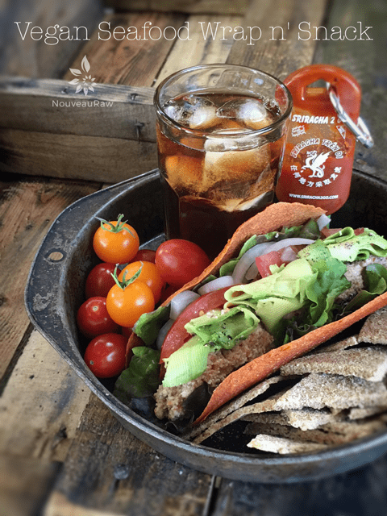

Vegan Seafood Wrap n’ Snack

Wraps… another raw food staple that puts the word “fast” into “fast foods.” I can’t tell you how many inquiries I have gotten over the years; people were asking me about what to make so they can have some raw food staples on hand. Wraps… is just one of the many items that quickly come to mind.
You can eat them as is, almost like a savory fruit leather. You can roll wraps tightly, loosely, or just fold them in half, loading them up with culinary delights.
Today’s lunch unfolded as I grabbed one of my Red Pepper & Corn Tortilla Wraps and loaded it with some vegan Seafood Salad Spread, fresh tomatoes, onions, and avocado… oh can’t forget a little squirt of Sriracha sauce.
All of that along with some cherry tomatoes, some Almond Thin crackers, and a glass of ice tea. It hit the spot! Once my digestion settled, I made sure to increase my water intake since the wraps and crackers were both dehydrated.
And yea, I served it all in an old baking pan. Hehe It works perfectly for holding all the goodies in place as we made our way outside to enjoy our meal, picnic style. Go ahead and think outside of the plate.
Sometimes just presenting food in a different fashion can make it seem like a whole new, exciting meal. The way the food looks on dishware is what tempts our eyes and makes you want to taste it. Did this give you some meal-time inspiration? I hope so. Sending you kitchen blessings and culinary wishes. amie sue
© AmieSue.com